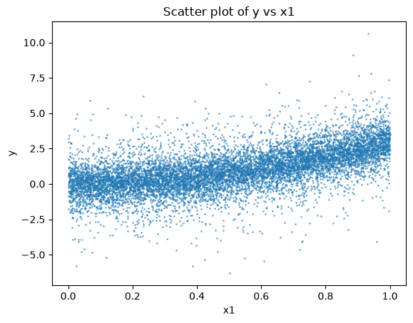
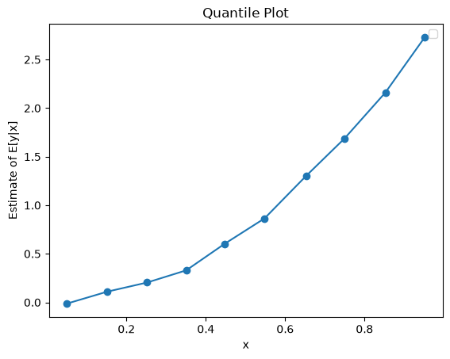
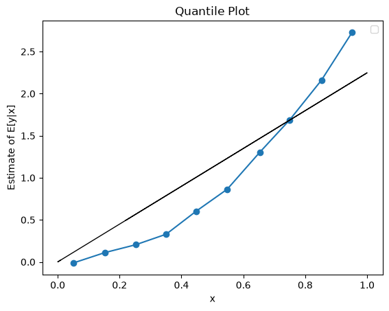
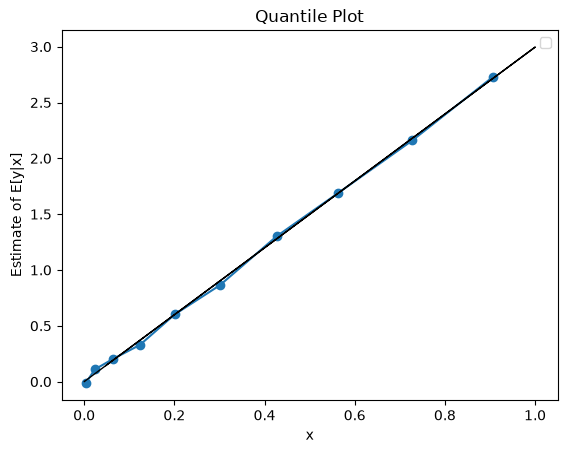
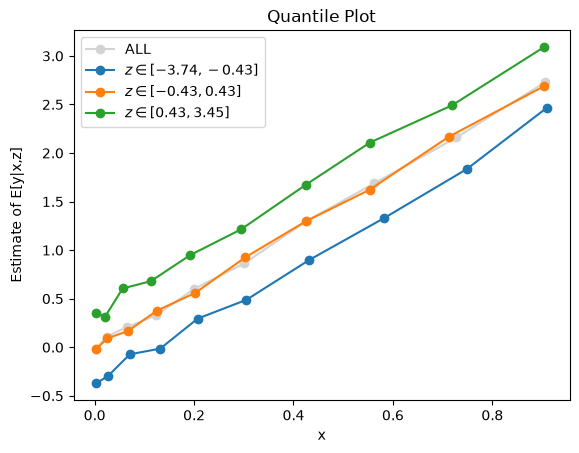
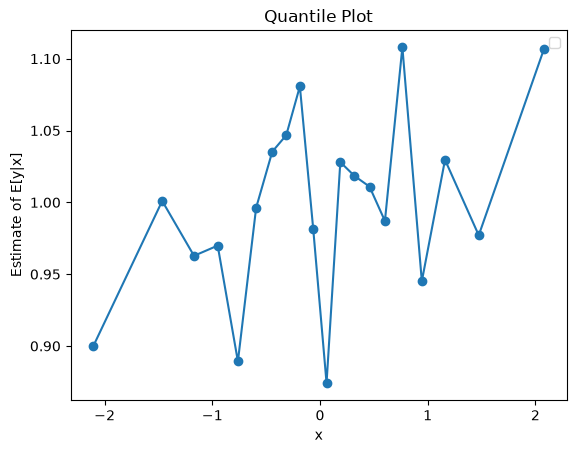
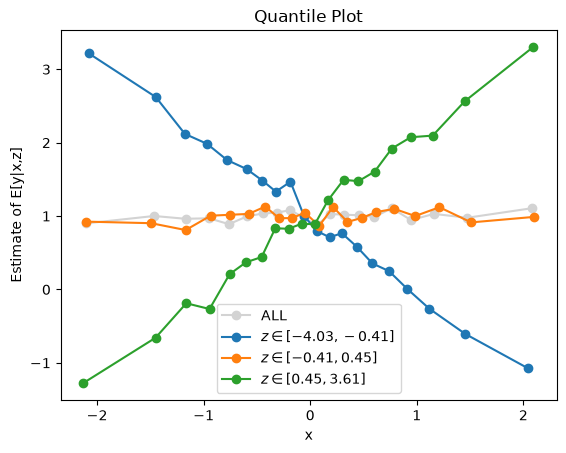

import numpy as np
n = 10000
x1 = np.random.uniform(size=n)
x2 = np.random.normal(size=n)
x3 = np.random.normal(size=n)
x4 = np.random.normal(size=n)
eps = np.random.normal(scale=0.5, size=n)
y = 3 * x1 ** 2 + x2 / 3 + x3*x4 + epsLab 1 Presentation - Data Visualization for Linear Modeling
We have data, and suppose we want to fit ordinary least squared (OLS): \[ \hat{\boldsymbol{\beta}}= (\boldsymbol{X}^T\boldsymbol{X})^{-1}\boldsymbol{X}^T\boldsymbol{Y}, \] in order to minimize the average squared error loss \(\mathscr{L}(y, \hat{y}) = (y- \hat{y})^2\) on a test set.
1 First attempt to plot
Let us explore the relation between x1 and y using a scatter plot.
from matplotlib import pyplot as plt
plt.scatter(x1, y, s=1, alpha=0.5)
plt.xlabel("x1")
plt.ylabel("y")
plt.title("Scatter plot of y vs x1")Text(0.5, 1.0, 'Scatter plot of y vs x1')
There seems to be some kind of upward trend, but the data are very noisy. What can we do?
2 Introducing quantile_plot
This functions bins the x values into bins bins, and plot the mean y value for each bin. You can see it as an approximation of \(E[Y|x=x_i]\) for \(x_i\) the midpoint of the bin.
import numpy as np
from matplotlib import pyplot as plt
def get_qp_data(x: np.ndarray, y: np.ndarray, n_bins=10, y_summary=np.mean):
"""
Compute y_summary[bin_i] = summary of (y|x in bin_i), by binning values of x in disjoint intervals bin_i, for i=1,...,n_bins.
Then convert the provided x and y arrays into the corresponding pair [bin_i, y_summary[bin_i]]
Args:
x (np.ndarray): 1D array of x values.
y (np.ndarray): 1D array of y values.
n_bins (int): Number of quantile bins.
y_summary (callable): Function to summarize y values in each bin.
Returns:
x_binned (np.ndarray): bin centers for x.
y_summarized (np.ndarray): Summarized y values for each quantile bin.
"""
x_quantiles = np.quantile(x, q=[i / n_bins for i in range(1, n_bins)])
x_index_bin = np.searchsorted(x_quantiles, x)
x_binned = np.array([np.mean(x[x_index_bin == i]) for i in np.unique(x_index_bin)])
y_summarized = np.array([y_summary(y[x_index_bin == i]) for i in np.unique(x_index_bin)])
return x_binned, y_summarized
def quantile_plot(x:np.ndarray, y:np.ndarray, z=None, n_bins=10, n_z_bins=3, y_summary=np.mean):
"""
Compute and plot [bin_i, y_summary[bin_i]]. If z is provided, then compute and plot the same for each quantile bin of z.
Args:
x (np.ndarray): 1D array of predictor values.
y (np.ndarray): 1D array of response values.
z (np.ndarray, optional): Values used to create separate quantile plots.
n_bins (int): Number of quantile bins for x.
n_z_bins (int): Number of quantile bins for z.
y_summary (callable): Function used to summarize y values in each bin.
"""
assert len(x) == len(y), "x and y must have the same length"
x_binned, y_summarized = get_qp_data(x, y, n_bins=n_bins, y_summary=y_summary)
if z is None:
plt.plot(x_binned, y_summarized, "-o")
plt.ylabel("Estimate of E[y|x]")
else:
assert len(x) == len(z), "x and z must have the same length"
plt.plot(x_binned, y_summarized, "-o", label="ALL", color="lightgrey")
z_quantiles = np.quantile(z, q=[i / n_z_bins for i in range(1, n_z_bins)])
z_index_bin = np.searchsorted(z_quantiles, z)
for i, j in enumerate(np.unique(z_index_bin)):
z_mask = (z_index_bin == j)
z_mask_legend = rf"$z \in [{min(z[z_mask]):.2f}, {max(z[z_mask]):.2f}]$"
x_binned, y_summarized = get_qp_data(
x[z_mask], y[z_mask], n_bins=n_bins, y_summary=y_summary
)
plt.plot(x_binned, y_summarized, "-o", label=z_mask_legend)
plt.ylabel("Estimate of E[y|x,z]")
plt.xlabel("x")
plt.title("Quantile Plot")
plt.legend()Let us run quantile_plot on x1 and y.
quantile_plot(x1, y, n_bins=10)/tmp/ipykernel_9963/3375396461.py:65: UserWarning: No artists with labels found to put in legend. Note that artists whose label start with an underscore are ignored when legend() is called with no argument.
plt.legend()
The plot now is much less noisy, and the upward trend is very clear.
3 Is this a good fit for a linear model?
Is it linear? Let us add a line that represents the OLS prediction.
quantile_plot(x1, y)
b1 = sum(x1 * y) / sum(x1 ** 2)
plt.plot(x1, x1 * b1, color='black', linewidth=1)/tmp/ipykernel_9963/3375396461.py:65: UserWarning: No artists with labels found to put in legend. Note that artists whose label start with an underscore are ignored when legend() is called with no argument.
plt.legend()
The black (OLS) is not a good fit. Should we care?
Recall from class, we showed that the minimizer of squared error is the conditional mean: \[
f^* = \arg\min\left\{\mathbb{E}_{\vphantom{}}\left[(y-f(\boldsymbol{x}))^2\right]: f \text{ function}\right\} \; \; \; \; \text{if and only if} \; \; \; \; f^*(\boldsymbol{x})=\mathbb{E}_{\vphantom{}}\left[y|\boldsymbol{x}\right].
\] The blue line is relatively smooth, to the extent that we may believe that the true mean of y as function of x_1 follows closely to it. Therefore, the best possible prediction if we want to minimize squared error would be roughly the blue line.
So, yes, we should care. If we run OLS on x1 we will predict the black line, which is quite far from optimal.
How can we improve the prediction?
4 Feature engineering
Let us try a quadratic relation, \(y=x_1^2\). We create a new variable x1_sq which is the square of x1, and repeat the process over x1_sq and y instead.
x1_sq = x1 ** 2
quantile_plot(x1_sq, y, n_bins=10)
b1_sq = sum(x1_sq * y) / sum(x1_sq ** 2)
plt.plot(x1_sq, x1_sq * b1_sq, color='black', linewidth=1)/tmp/ipykernel_9963/3375396461.py:65: UserWarning: No artists with labels found to put in legend. Note that artists whose label start with an underscore are ignored when legend() is called with no argument.
plt.legend()
The black (OLS) line looks like a good fit now. The deviations of the blue line are small and seemingly random. Or are they?
In any case, OLS in x1_sq looks like a better fit that OLS in x1. We seem to be predicting close to the true conditional mean: \[
\mathbb{E}_{\vphantom{}}\left[y|x_1\right] \approx \beta x_1^2.
\]
Will this translate to reduced squared error? Let us check.
def average_squared_error(y_true:np.ndarray, y_pred:np.ndarray) -> float:
""" Compute the average squared error between true and predicted values.
Args:
y (np.ndarray): True values of shape (n,).
yhat (np.ndarray): Predicted values of shape (n,).
Returns:
float: Average squared error.
"""
return np.mean(np.subtract(y_true, y_pred) ** 2)
average_squared_error(y, np.mean(y)), average_squared_error(y, x1 * b1), average_squared_error(y, x1_sq * b1_sq)(np.float64(2.1798734260862287),
np.float64(1.4868990758803466),
np.float64(1.3694551243264335))On the left is the variance of \(y\), which is the squared error if we predict the empirical average of \(y\). In the middle is the squared error for the linear model in \(x_1\). On the right is the squared error for the linear model in \(x_1^2\).
We see that the model with \(x_1^2\) is indeed better than the model in \(x_1\), but not by that much. This is probably as much as we can get from this feature alone.
5 Interaction
Let us try one more thing. We add to the mix another feature \(x_2\), and plot the joint contribution of \(x_1^2\) and \(x_2\) to \(y\). quantile_plot allows that by binning the by variable (in this case x2) into by_bins bins, and plots multiple quantile_plot, one for each level of the by variable.
In the case below, the blue line corresponds to quantile_plot between x1_sq and y for data with low x2. The orange line corresponds to medium-range x2, and the green line to high values of x2.
quantile_plot(x1_sq, y, n_bins=10, z=x2, n_z_bins=3)
We see that the three lines are relatively parallel, which means there is probably no interaction between x1_sq and x2. The fact that the green line lies above the orange line, which lies above the blue line, indicates a main effect for x2. The fact that each of the lines is increasing indicates a main effect for x1_sq.
Taken together, we should probably include both x1_sq and x2 in our model, as two separate features.
Let us now look at the feature we know is involved in some interaction
quantile_plot(x3, y, n_bins=20)/tmp/ipykernel_9963/3479082327.py:67: UserWarning: No artists with labels found to put in legend. Note that artists whose label start with an underscore are ignored when legend() is called with no argument.
plt.legend()
The first plot does not look significantly enlightning. Let us now try to plot it against x4:
quantile_plot(x3, y, z=x4, n_bins=20)